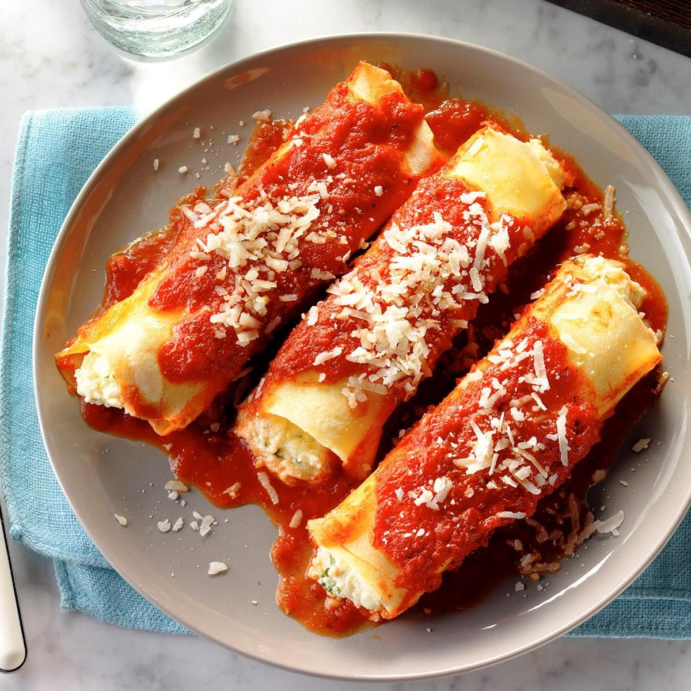

Manicotti

Description
“Manicotti” (which means, literally, “little sleeves”) can refer to both a pasta shape and an Italian dish. Manicotti shells are large, tubular, and intended to be stuffed. Traditionally, manicotti is stuffed with a cheese mixture and baked in a tomato sauce.
Ingredients
- Pasta: Use store-bought or homemade manicotti pasta shells.
- Cheeses: You’ll stuff the manicotti with a rich mixture of ricotta, mozzarella, and Parmesan cheeses.
- Eggs: Two eggs lend moisture and help bind the filling together.
- Seasonings: The manicotti recipe is seasoned with dried parsley, salt, and ground black pepper.
Steps
- Boil and drain the manicotti.
- Make the filling and spread sauce in the bottom of a baking dish.
- Stuff the shells and arrange them over the sauce.
- Pour the remaining sauce over the shells and sprinkle with Parmesan.
- Bake the manicotti until bubbly.